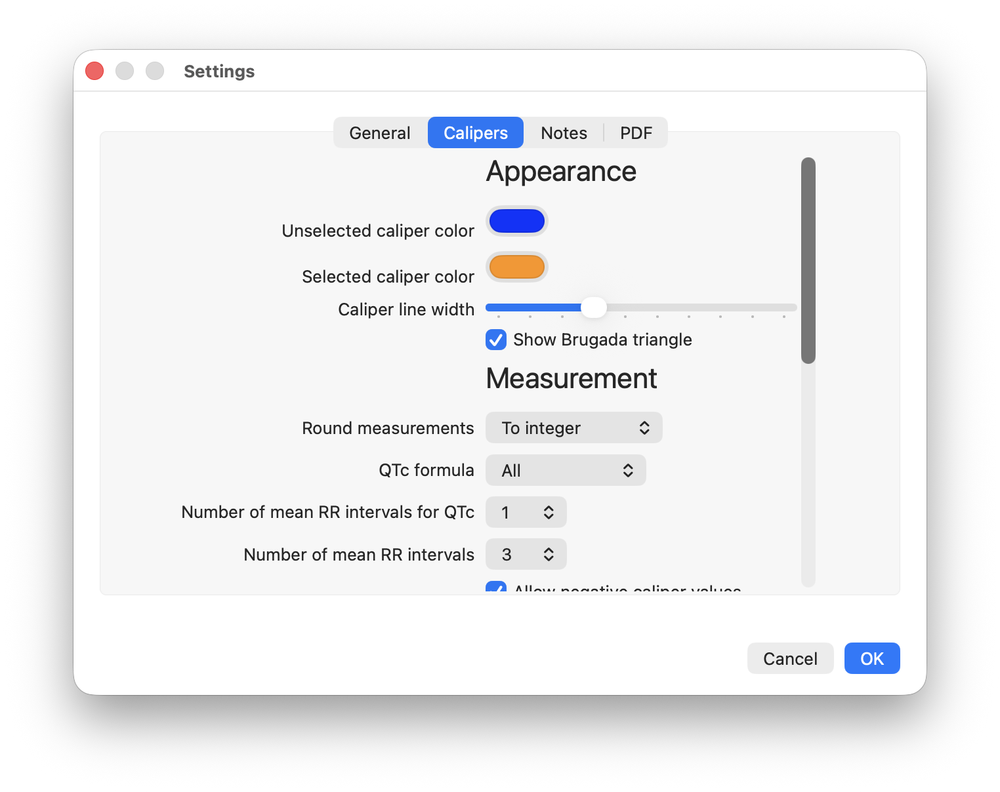

Settings
Settings
Settings can be changed using the EP Calipers | Settings menu item. Settings are grouped into General, Calipers, Notes, and PDF tabs. You can adjust startup behavior, caliper appearance, measurement defaults, label placement, note appearance, and PDF page behavior.
Many settings provide default values used when making new measurements. For example, if you usually use one RR interval for QTc measurements, set the default number of mean RR intervals for QTc to 1. You can still override these defaults while making a measurement.

Figure 1: Settings
Settings explained
General
- Transparent mode at start-up: Makes the main window transparent. EP Calipers can then be used as a floating caliper to measure anything you have open on your Desktop. Takes effect immediately, and will also start the app in transparent window mode when restarted.
- Show sample ECG at start-up: Select to show a sample normal ECG at startup. If unchecked, will start with a welcome screen.
- Show prompts: Prompts guide you through the steps of calibrating and making measurements. Prompting is useful when you are first learning the program, but it is faster to disable this option. Note that even with this option unchecked, prompts are shown when making QTc measurements.
Calipers
- Appearance
- Unselected caliper color: This is the color of unselected newly added calipers. Note that this color can be overridden by right-clicking on a caliper and selecting Caliper Color.1
- Selected caliper color: This is the color of the selected caliper.
- Caliper line width: Increase or decrease this slider to make the caliper lines thicker or thinner.
- Show Brugada triangle: Show the base of the Brugada triangle automatically on angle calipers when time calipers are calibrated and when amplitude calipers are calibrated in millimeters.
- Measurement
- Round measurments: Choose how msec and rate values are displayed. Choices include round to the nearest integer (e.g. 305.463 becomes 305, 1010.728 becomes 1011), display 4 significant digits (e.g. 305.5 and 1011), round to tenths (e.g. 305.5 and 1010.7), and round to hundredths (305.46 and 1010.73). Note that values in secs or values using other units and calculated values such as QTc are always shown using 4 digits.
- QTc formula: Choose a QTc formula. Choose "All" to use all the formulas.
- Number of mean RR Intervals for QTc: The default number of intervals you use to measure the mean RR interval for QTc measurements.
- Number of mean intervals for mean RR: The default number of intervals you use to measure mean RR intervals.
- Allow negative caliper values: If checked, caliper measurements can have negative values.
- Calibration
- Time calibration: This is the default value that appears in the custom calibration text box when calibrating time calipers. If you usually calibrate to a certain value (say 200 msec) then it is useful to change this default value.
- Amplitude calibration: This is the default value for custom calibration of amplitude calipers. Put whatever value you usually use to calibrate here.
- Labels
- Caliper label font size: Adjust the text font size of caliper labels.
- Auto-position text: Caliper text will avoid being obscured by the window edges or the caliper itself by shifting position. For example, if a caliper text label is to the right of the caliper and the caliper gets too close to the right side of the window, it will shift over to the left of the caliper.
- Time caliper text position: Adjust the text label of time calipers to be above or below the center of the crossbar, or on the left or right side of the caliper.
- Amplitude caliper text position: Adjust the text label of amplitude calipers on the top or bottom of the caliper, or left or right of the crossbar.
- Marching Calipers
- Dim marching components: If selected, marching components appear slightly less prominent than the main caliper.
- Number of marching components: Adjust the number of marching caliper components from 1 to a maximum of 20.
Notes
- Note text font size: Adjust the text font size of new notes.2
- Note text color: Adjust the color of the text in new notes.
- Note text box width: Set the width of note text box.
- Note text box height: Set the height of note text box.
- PDF resolution: Choose the resolution used when rendering PDF pages. Higher resolution can make PDF images clearer, but may use more memory and make page changes slower.
- Clear calipers between pages: Remove calipers from the previous PODF page when changing pages.
- Recalibrate calipers between pages: Clear calibration automatically when changing PDF pages.
- Reset image zoom between pages: Reset zoom to actual image size when changing pages.
- Reset image rotation between pages: Reset image rotation when changing pages.